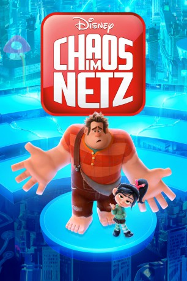

#11048 Ralph reichts 2 - Chaos im Netz
Alternativ: Ralph Breaks the Internet (Englischer Titel)
Auszeichnungen: für 1 Oscars nominiert
 
 IMDB-Wertung: 7.1 / 10
IMDB-Wertung: 7.1 / 10  Metascore: 71
Metascore: 71 
Nach einem unglücklichen Unfall stürzen sich Ralph und seine quirlige Freundin Vanellope ins Internet, um dort nach einem wichtigen Ersatzteil für Vanellopes Videospiel zu suchen. Dabei schauen sie nicht nur hinter die Kulissen des World Wide Webs, sondern begegnen auch allerhand schrägen Figuren, die es nicht immer gut mit unseren liebenswerten Helden meinen. Und wo sollen sie überhaupt in dieser unübersichtlichen und sich ständig verändernden Welt mit ihrer Suche anfangen? Gänzlich unerfahren im Umgang mit dem Surfen im Netz richten die beiden innerhalb kürzester Zeit im Internet völliges Chaos an…
Jahr: 2018
Dauer: 112 Minuten
FSK: 6
Land: USA Studio: Walt Disney Studios Motion PicturesTonspuren: DD5.1 - ,
Untertitel:
Auflösung: 1080p (1920x808) Größe: 4147 MB
Genre: Komödie, Abenteuer, Fantasy, Animation/Trick, Familie
Regisseur: Phil Johnston, Rich Moore
Drehbuch: Phil Johnston, Pamela Ribon, Rich Moore, Phil Johnston, Jim Reardon
Soundtrack: Henry Jackman
Darsteller:
Datei: X:\Kinder Disney HD\Ralph reichts\Ralph reichts 2 - Chaos im Netz (2018, FSK6, 1920x808).mkv seit 24.04.2019
Festplatte: Kinder-Filme+Trick
 Alle Filme aus Gruppe 'Kinder Disney HD\Ralph reichts'
Alle Filme aus Gruppe 'Kinder Disney HD\Ralph reichts'